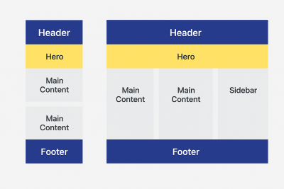

Site Name
MindWink Academy - The name represents deep insights and thinking beyond conventional methods. This site is dedicated to helping high school students connect their subconscious, conscious, and physical selves for academic success.
Site Purpose
MindWink Academy is an educational website providing students with strategies, exercises, and resources to improve their learning process. It covers deep learning techniques, mindfulness, and subject mastery.
Scenarios (User Questions)
- How can I improve my problem-solving and critical thinking skills for better academic performance?
- What are effective techniques for reducing stress and improving focus while studying?
Color Scheme
Primary: Deep Blue (#1E3A8A) – Wisdom and trust.
Secondary: Gold (#FFD700) – Enlightenment and achievement.
Background: Light Gray (#F3F4F6) – Clean and readable.
Typography
Heading Font: Montserrat
Body Font: Lora
Accent Font: Raleway
Wireframe Overview
Mobile View: Navigation menu, hero section, featured articles, exercises, and footer.
Desktop View: Full-width header, large hero section, three-column layout, and structured footer.
CSS Guidelines
- Consistent color scheme and typography.
- Responsive design with flexible grids and media queries.
- Proper contrast for readability and accessibility.
- Smooth animations for user engagement.
Testing & Optimization
- Validate HTML and CSS for compliance with web standards.
- Check accessibility using Lighthouse and contrast checkers.
- Optimize images and assets for fast loading times.
- Conduct user testing for usability improvements.
Wireframe
Below is the wireframe layout for the MindWink Academy website, incorporating the Holy Grail design:
